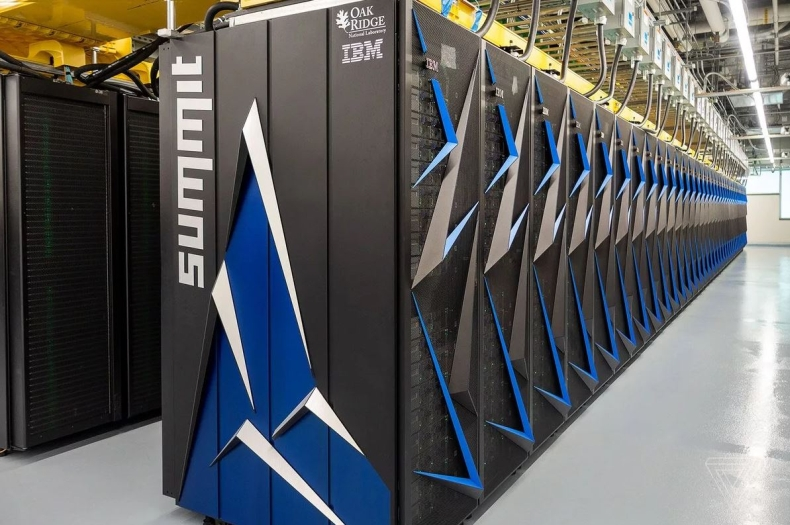
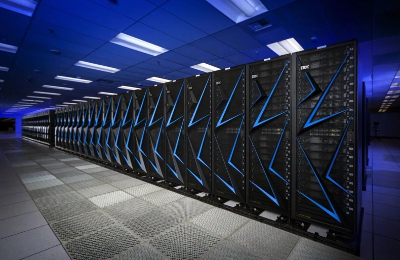

1. Summit
Суперкомпьютер Summit, созданный американской компанией IBM для Национальной лаборатории в Окридже. Технику ввели в эксплуатацию летом 2018 года, заменив модель Titan, которая считалась самой производительной американской СуперЭВМ. Разработка лучшего современного суперкомпьютера обошлась американскому правительству в 200 млн долларов.
Устройство потребляет около 15 МВт электроэнергии – столько, сколько вырабатывает небольшая ГЭС. Для охлаждения вычислительной системы используется 15,1 кубометра циркулирующей по трубкам воды. Сервера IBM расположены на площади около 930 кв.м – территория, которую занимают 2 баскетбольные площадки. Для работы суперкомпьютера используется 220 км электрокабелей.
Производительность компьютера обеспечивается 9216 процессорами модели IBM POWER9 и 27648 графическими чипами Tesla V100 от Nvidia. Система получила целых 512 Гбайт оперативной и 250 Пбайт постоянной памяти (интерфейс 2,5 Тбайт/с). Максимальная скорость вычислений – 200 Пфлопс, а номинальная производительность – 143,5 Пфлопс.
По словам американских ученых, запуск в работу модели Summit позволил повысить вычислительные мощности в сфере энергетики, экономическую конкурентоспособность и национальную безопасность страны. Среди задач, которые будут решаться с помощью суперкомпьютера, отмечают поиск связи между раковыми заболеваниями и генами живого организма, исследование причин появления зависимости от наркотиков и климатическое моделирование для составления точных прогнозов погоды.
2. Sierra
Второй американский суперкомпьютер Sierra (ATS-2) тоже выпущен в 2018 году и обошелся Соединенным Штатам примерно в 125 миллионов долларов. По производительности он считается вторым, хотя по среднему и максимальному уровню скорости вычислений сравним с китайской моделью Sunway TaihuLight.
Расположена СуперЭВМ на территории Национальной лаборатории имени Э. Лоуренса в Ливерморе. Общая площадь, которую занимает оборудование, составляет около 600 кв.м. Энергопотребление вычислительной системы – 12 МВт. И уже по соотношению производительность к расходу электричества компьютер заметно обогнал конкурента из КНР.
В системе используется 2 вида процессоров – серверные ЦПУ IBM Power 9 и графические Nvidia Volta. Благодаря этим чипам удалось повысить и энергоэффективность, и производительность. 4320 узлов со 190 тысячами ядер обеспечивают вычисления на скорости 94,64 петафлопс. Максимальная производительность – 125,712 Пфлопс или 125 квадриллионов операций с плавающей точкой в секунду.
Новую систему предполагается использовать в научных целях. В первую очередь – для расчетов в области создания ядерного оружия, заменяя вычислениями подземные испытания. Инженерные расчеты с помощью Sierra позволят разобраться и с ключевыми вопросами в области физики, знание которых позволит совершить ряд научных открытий.